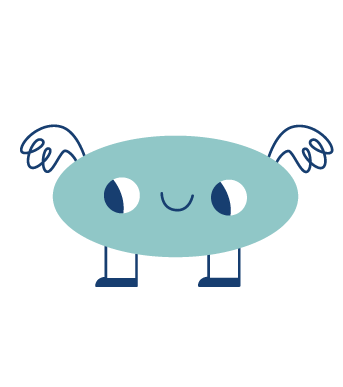
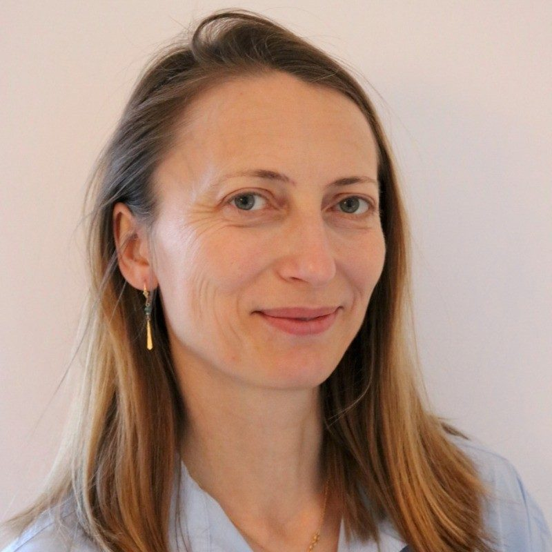
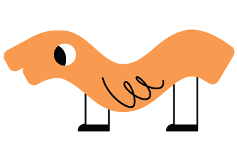
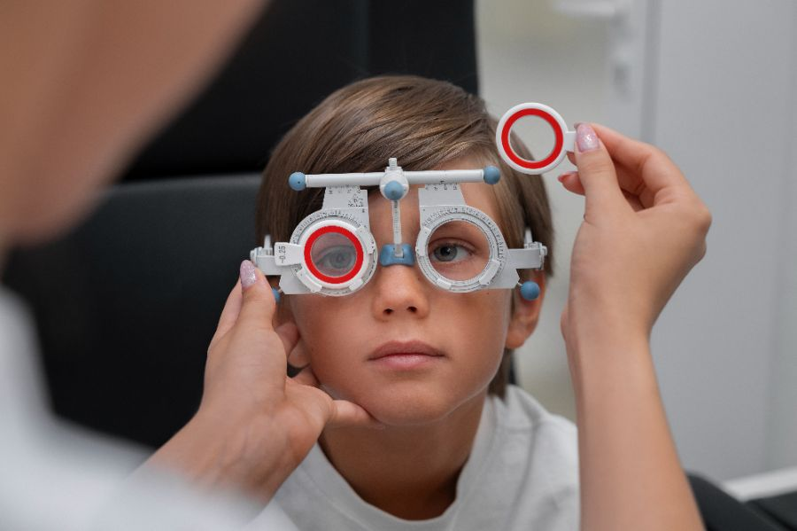
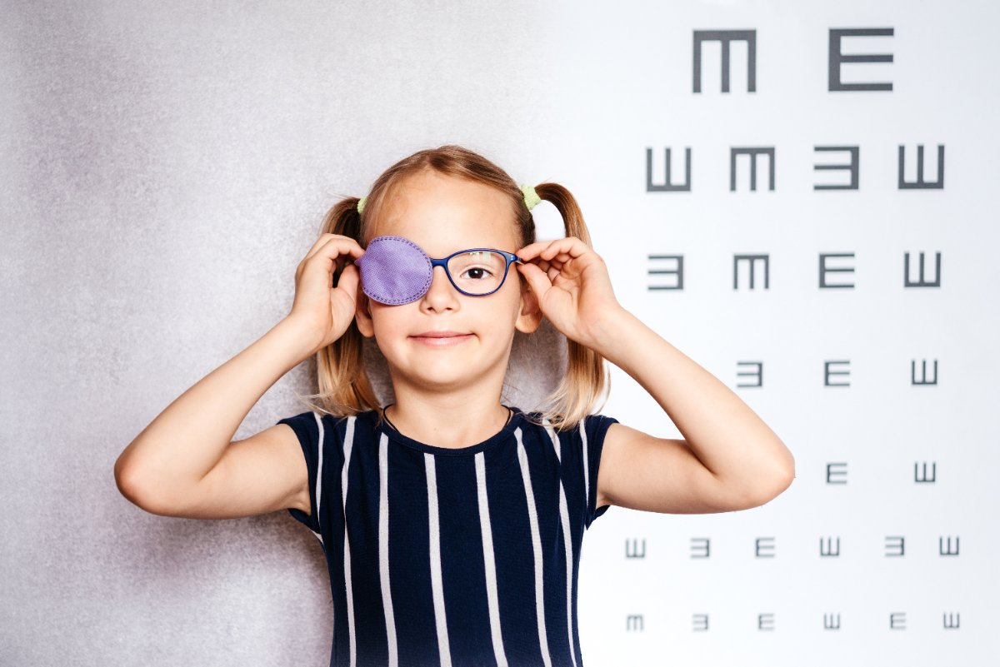
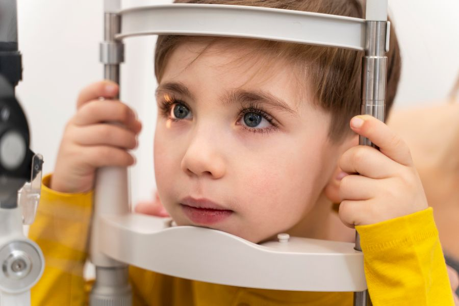

What we can help you with
The conditions and questions parents bring to my consultations.

The first consultation
What can you expect?
Eye drops
To assess the eyes properly, we use eye drops that relax focusing and widen the pupils. These drops need at least 30 minutes to take effect.
Intake consultation
Together with the intake and the examinations that follow, the full consultation easily takes one to one and a half hours.
Cap/Sunglasses
The drops don’t wear off straight away, so your child will be extra sensitive to light for a few hours after the consultation. A cap and/or sunglasses can help ease this discomfort.

So be sure to allow plenty of time!
Feel free to bring some snacks and water, and a board game or a book.
More questions about the examination?See the frequently asked questions →

Dr. Irina Balikova
I am a paediatric ophthalmologist specialising in paediatric and genetic eye conditions. I built my expertise at the Queen Fabiola Children’s University Hospital, Erasme Hospital, Ghent University Hospital and UZ Leuven.
In my practice, I approach every child calmly and respectfully, with attention for both the child and the parents.
Read more about me →Three locations
I see patients in Leuven, Brussels and Aarschot. You book an appointment directly with the clinic of your choice.


Children’s eye care
Background on the conditions I see most often — written for parents.


Myopia care pathway
How to recognise short-sightedness in children aged 4 to 18, and when a referral is needed.
Read the article →
Amblyopia care pathway
How a lazy eye develops, why detection before age 6 matters and how treatment works.
Read the article →
Strabismus care pathway
Strabismus affects 5% of children. The signs, and when it is urgent.
Read the article →Ready to book an appointment?
Choose the clinic that suits you best and book directly online. Have a question? Feel free to call the practice.
Book an appointment Or check the frequently asked questions first